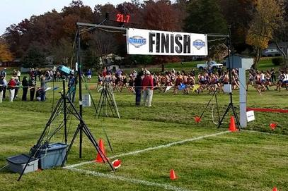

Cross Country (abbreviated to CC or XC) originated from the Crick Run held every year since 1838 at
Rubby School In England. Many other famous schools followed suit in holding annual cross-country races.
Thirty years later the Thames Rowing Club held cross-country runs and races as a winter sport to condition
rowers.
Races Start in masses, with each team having it's own box/area to along the start. A gun or horn is sounded
when the race has started. After the first 200 to 300 meters, runners typically fall into their "race pace", or
a steadier pace that can be maintained for a long period of time. during this, they have to run whithin a marked
path usally indicated by a long white line telling runners where to go. The final strtch is where the runners go all
out trying to take as many places as possible. at the finnish line there are helpers to assist the runners who finnished.
When two or more teams compete, a score may be compiled to determine which team wins. points are rewarded to individual
runners, the score they get is equal to the position they cross the finnish line (first place gets 1 point, second place
gets two points, ect), and all the points are for a team are summed. Finnaly, teams are ranked based on how many total
they got, with the least amount of points being the best, and the most being the worst.